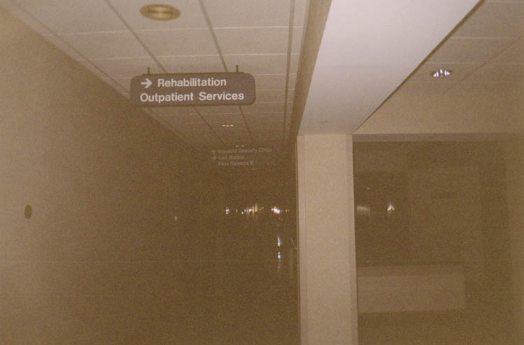
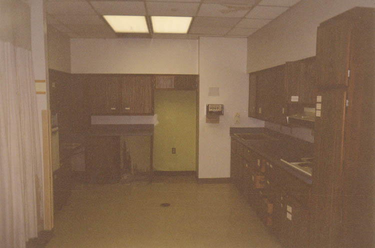
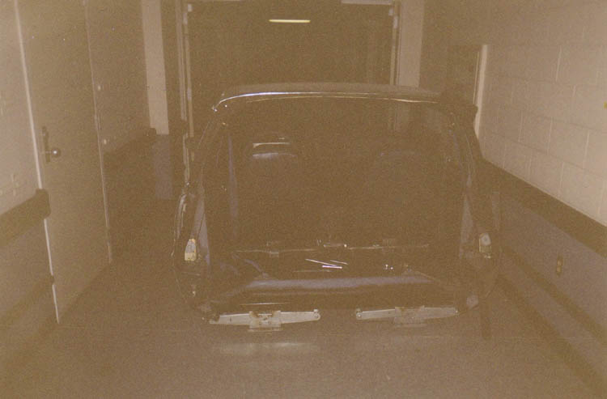
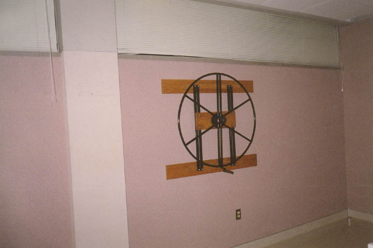

The Franciscan featured an extensive physical rehabilitation department when it was open. When I saw signs for Rehab, I thought--as many of you probably do--of a methadone clinic. This isn't that kind of rehab, though; this is for people who have been badly injured (in a car accident, for example) who need help learning to live normally again.

Sections of the rehabilitation services department were arranged as mockups of a kitchen, a bedroom, a living room. Above you can see the kitchen, which is complete with counters, a stove, a fridge, a dishwasher, and cabinets labelled with things like PLATES and CANNED FOODS. The bedroom setup has a bed, a bedside table with a phone, and a bureau. I guess the idea was for people to get used to functioning at home before they were released.

But by far the most interesting thing in the rehab department was the half car, which you can see above. It was a car of some kind with everything sliced off in front of the windshield and behind the front seats. Patients used it to get adjusted to getting in and out of a car again, as well as working the pedals and steering--and wearing their seatbelts, for god's sake.

The rehab center also had a small gymnasium with odd padded platforms which tilted by remote control. This might have been associated with the huge nadatorium in the basement, which contained a larger gym, a sauna, a whirlpool, and a swimming pool with its own locker room. Above is a weird spinning wheel with a handle which was attached to one of the walls. To take a look at the psych wards, click below.

Back